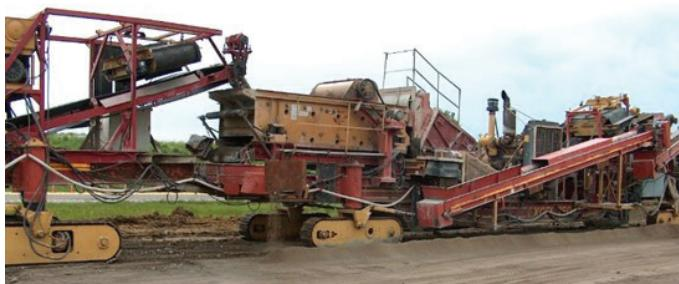

RCA Mechanical Strength Engineering
RCA Mechanical Strength Engineering is the systematic design and processing of recycled‑concrete aggregate to achieve load‑bearing capacities suitable for pavement base, subbase, and shoulder layers[1][2][3]. By limiting coarse RCA replacement to roughly 30 % of natural crushed aggregate and fine RCA to 10–20 %, selecting appropriate particle size distributions, and controlling the amount of adhered mortar, engineers exploit the angular, rough‑textured particles that provide high interlock, shear strength, permeability and stability[1][2][3]. When these criteria are satisfied, the engineered RCA exhibits mechanical properties—compressive strength, modulus, abrasion resistance, freeze‑thaw durability—comparable to virgin aggregate while delivering a free‑draining, highly stable base material for traffic loads[1][2][3].
Sources (3)
Material purpose and applicability
RCA Mechanical Strength Engineering is the systematic design and processing of recycled‑concrete aggregate so that its load‑bearing capacity meets the requirements of a given pavement layer. The practice limits the replacement of natural coarse aggregate to “up to 30 percent of natural crushed coarse aggregate can be replaced with coarse RCA without significantly affecting any of the mechanical properties of the concrete,” and restricts fine content to “Only a maximum of 10 to 20 percent fine RCA has been shown to be beneficial.” By selecting appropriate particle size distributions and controlling mortar content, engineers exploit the fact that “The mechanical properties of RCA are a function of the quality and size of the particles.” When these criteria are met, the engineered RCA serves as an “provide excellent free-draining base material that is both permeable and highly stable,” providing the structural support needed to distribute traffic loads, resist erosion, and act as a durable foundation for overlying asphalt or concrete layers. [1][2][3]
[1] — Design (pp. 71–72); [2] — Ch. 4 (pp. 41–51); [3] — Ch. 6 (pp. 78–83)
Across the guides, RCA engineered for mechanical strength is appropriate for unbound pavement‑base layers, unbound base, subbase and subgrade improvement layers, as well as for unbound aggregate shoulder surfaces when blended with natural aggregate. The material meets the “Los Angeles abrasion loss limit of 50%” and, in low‑sulfate environments, soundness testing may be waived. For typical traffic loads the guides note that these layers perform adequately; RCA’s rough texture, high shear strength, rutting resistance and resilient modulus satisfy demands even in climates that produce freeze‑thaw cycles or when existing pavement exhibits ASR or D‑cracking. The guides agree that soils “do not contain high levels of sulfates” (or “high‑sulfate soils”) are required; where aggressive sulfate exposure is present, an alternative aggregate should be selected. Shoulder applications are limited to blends of up to about 30 % RCA for new shoulders and 50 % for rehabilitation projects; pure RCA shoulders can remain unstable under heavy‑truck loads until moisture conditions improve, so in high‑load or severe exposure situations a different or blended aggregate is recommended. When the site has high‑sulfate soils, aggressive sulfate attack potential, or expects heavy truck traffic on unblended RCA, the guides advise selecting another material. [2][3]
[2] — Ch. 4 (p. 45), Ch. 5 (p. 55); [3] — Ch. 6 (pp. 82–83)
Composition and characteristics
The material that underpins RCA mechanical‑strength engineering is a composite of crushed concrete fragments that retain a coating of old cement mortar together with any remaining natural aggregate particles. By definition the particles are angular and rough‑textured rather than rounded and smooth, providing interlock and friction that contribute to stiffness. The overall density, gradation and amount of adhered mortar govern its behavior: coarse RCA can replace up to 30 % of natural crushed aggregate without markedly changing compressive strength or freeze‑thaw resistance, while the fine fraction must be limited because the mortar content rises with decreasing size. When processing limits the mortar coating and excludes fines smaller than a #4 sieve, the resulting RCA exhibits mechanical properties comparable to virgin aggregate, including similar compressive strength, static modulus, abrasion resistance and resilient modulus. Higher absorption capacity, greater water demand, and increased shrinkage are linked to the porous mortar fraction, which also enables secondary hydration that can further raise stiffness over time. [1][2][3]
[1] — Design (pp. 71–72); [2] — Ch. 3 (pp. 32–33), Ch. 4 (pp. 41–51), Ch. 5 (pp. 54–58), Ch. 6 (p. 61); [3] — Ch. 6 (pp. 78–83)
The guides agree that the proportion of recycled concrete aggregate governs the mechanical response. Replacing up to about thirty percent of coarse natural aggregate with coarse RCA leaves strength, elasticity and durability essentially unchanged, but as the replacement level rises the mix becomes more prone to drying shrinkage and creep and exhibits lower tensile strength and modulus of elasticity, while compressive strength and freeze‑thaw resistance are largely unaffected. Fine RCA must be limited; practical experience shows that only modest percentages (generally 10–20 %) provide benefit without compromising workability or strength. Processing that removes the adhered mortar and eliminates particles finer than a #4 sieve yields an aggregate whose behavior mirrors that of virgin material, whereas significant residual mortar combined with excessive fines raises water absorption, reduces abrasion resistance and can cut concrete strength by up to 40 % when no admixtures are used. Because RCA typically has higher Los Angeles abrasion loss—often reaching 45 % compared with the usual 30–40 % limit for natural aggregate—specifications may need adjustment or additional quality‑control steps. By controlling source selection, crushing and screening operations, blend ratios, moisture content, and handling practices, engineers can tailor RCA to meet target strength and durability criteria while mitigating the risks associated with higher shrinkage, reduced tensile capacity, and increased abrasion loss. [1][2][3]
[1] — Design (pp. 71–72); [2] — Ch. 3 (pp. 32–33), Ch. 4 (pp. 41–51), Ch. 5 (pp. 55–58); [3] — Ch. 6 (pp. 79–83)
Key material properties
The guides agree that the key properties of RCA concrete span four domains.
Physical domain – The aggregate must satisfy gradation criteria such as “minimum of 5% passes the No. 200 sieve” and exhibit “angular, rough particles that provide high interlock and surface friction.” Its higher variability in specific gravity and absorption is described as “higher specific‑gravity variability and absorption demand a significantly higher optimum moisture content,” while the mortar coating also creates “One of the major differences between RCA and conventional aggregate is the absorption capacity due to the presence of the mortar fraction on the recycled particles.” Design targets include a “minimum in-place density of no less than 95% of standard Proctor” and a “target permeability of 150–350 ft/day.”
Mechanical domain – The performance is defined by “tensile strength, modulus of elasticity, compressive strength, drying shrinkage, creep, and freeze‑thaw resistance.” Up to “up to 30 percent of natural crushed coarse aggregate can be replaced with coarse RCA without significantly affecting any of the mechanical properties of the concrete,” whereas higher replacement levels cause “drying shrinkage and creep will increase and tensile strength and modulus of elasticity will decrease,” while “compressive strength and freeze‑thaw resistance are not significantly affected.” For fine aggregates, “Only a maximum of 10 to 20 percent fine RCA has been shown to be beneficial.” Particle breakage resistance is limited by “loss of not more than 50%” in Los Angeles abrasion testing, and load transfer depends on “aggregate toughness, shear strength and stiffness govern load transfer and deformation under traffic.” The guides note that “The mechanical properties of RCA are a function of the quality and size of the particles,” and that both strength and stiffness vary with mortar content: “Modulus of elasticity – Like strength, the static modulus of elasticity of RCA concrete is also inversely related to the RCA mortar content and the mix design of the new concrete.” Moreover, “Strength – The strength of RCA concrete can be easily engineered to be less than, equivalent to, or even superior to the original concrete made with natural aggregates.”
Chemical domain – The residual paste makes RCA vulnerable: “RCA is susceptible to sulfate attack,” and ongoing reactions such as “carbonation of very soluble CH released by the RCA” affect durability.
Thermal domain – Freeze–thaw durability is limited by a “maximum allowable loss of 20%,” while thermal expansion differs from virgin aggregate: “The coefficient of thermal expansion of concrete made with RCA is approximately 10 percent higher than the original concrete made from any specific aggregate, but in some cases may be as much as 30 percent higher.”
Balancing these interrelated properties through appropriate sizing, processing and mix design enables engineered RCA concrete to meet specified strength and durability criteria. [1][2][3]
[1] — Design (pp. 71–72); [2] — Ch. 3 (pp. 32–33), Ch. 4 (pp. 41–51), Ch. 5 (pp. 56–58), Ch. 6 (p. 61); [3] — Ch. 6 (pp. 79–83)
The mechanical‑strength properties of recycled‑concrete aggregate are quantified through a consistent suite of standardized laboratory tests that mirror those required for virgin aggregates. Across sources, gradation is first verified by measuring the percentage passing a No. 200 sieve, and absorption capacity is recorded because the adhered mortar raises water demand. Durability is assessed with abrasion testing—ASTM C131/C535 for small and large coarse particles and the Los Angeles test (AASHTO T‑96) limiting mass loss to no more than fifty percent—and with the Micro‑Deval (AASHTO T 327) test for aggregate toughness. Frost susceptibility is evaluated by tube‑suction or freeze‑thaw procedures, while soundness/bearing strength tests are also applied. Mechanical behavior is characterized by core indicators—drying shrinkage, creep, tensile strength, modulus of elasticity, compressive strength and freeze‑thaw resistance—and by shear strength measured in static triaxial (ASTM D2850‑15) or repeated‑load tests. Stiffness is expressed through the resilient modulus. Compaction performance is controlled with a standard Proctor test (AASHTO T 99 or ASTM D698), requiring at least 95 % of the maximum dry density, and the optimum moisture content—generally higher for RCA because of its greater absorption—is identified to achieve efficient compaction. The measured results are then used to classify RCA into performance categories such as RCA concrete, drainable base, unbound base or stabilized base, reflecting the achieved strength and durability levels. The guides note that up to about thirty percent coarse RCA can replace natural aggregate without a noticeable loss in those properties, while fine‑RCA content is typically limited to ten‑to‑twenty percent; however, when mixture designs meet all specified performance requirements (e.g., abrasion for HMA surface layers), higher replacement levels are permissible. [1][2][3]
[1] — Design (pp. 71–72); [2] — Ch. 3 (pp. 32–33), Ch. 4 (pp. 45–51), Ch. 5 (pp. 57–58); [3] — Ch. 6 (pp. 78–83)
Behavior and mechanisms
The combined guidance describes RCA‑based concrete as a material that can meet service loads but exhibits distinct mechanical and durability traits. Under repeated traffic the aggregate “tends to wear more rapidly than virgin stone” and “The abrasion loss of RCA (measured using ASTM C131 for small-size coarse aggregate and ASTM C535 for large-size coarse aggregate) is often higher than that of virgin aggregate,” which can lead to premature surface degradation unless limits are relaxed or protective measures are applied. Nevertheless, the angular, rough‑textured particles “provide excellent primary stability,” “delivering good shear strength and friction when compacted to at least 95 % of Proctor density.” When placed as an unbound base and properly compacted, RCA shows a “rougher texture and higher shear strength, rutting resistance and resilient modulus,” contributing to increased stiffness.
Moisture conditions dominate performance. The guides advise that the mix “should be placed close to the optimum moisture content” because the high absorption capacity otherwise generates fines and hampers compaction efficiency. Proper moisture also enables “Proper moisture also allows secondary hydration of fine RCA particles, which gradually increases stiffness but may introduce curling stresses in overlying slabs.” Absorption behavior follows “Absorption increases inversely with particle size,” resulting in “20 to 50 percent higher wetting and drying shrinkage when it contains coarse RCA” and “and 70 to 100 higher shrinkage when it contains both coarse and fine RCA.” Correspondingly, creep is elevated: “Creep of RCA concrete, typically 30 to 60 percent higher than concrete containing natural aggregates.”
Temperature cycling reveals moderate frost susceptibility. Freeze‑thaw testing per AASHTO T 103 shows “up to 20 % mass loss after 25 cycles,” indicating that RCA can survive typical seasonal fluctuations but is more vulnerable than natural aggregate. The thermal expansion coefficient is “approximately 10 percent higher … may be as much as 30 percent higher,” producing larger temperature‑induced strains.
Chemical exposure presents durability concerns. The material is “susceptible to sulfate attack, which produces unusual mass loss values that are not representative of the actual durability of the RCA,” and use in high‑sulfate soils is discouraged. Additionally, the mortar coating on recycled particles “dissolves in water and reacts with atmospheric CO₂ to form a solid material called tufa,” indicating susceptibility to carbonation‑related processes.
Other service considerations include handling sensitivity—“excessive movement during placement can generate fines and reduce stability”—and strict compaction requirements (“minimum in‑place density of no less than 95 % of standard proctor”). Over time, continued hydration and carbonation increase stiffness, allowing unstabilized bases to behave more like stabilized ones, though they may develop higher curling and warping stresses in overlying slabs. [1][2][3]
[1] — Design (pp. 71–72); [2] — Ch. 3 (pp. 32–33), Ch. 4 (pp. 41–51), Ch. 5 (pp. 55–58); [3] — Ch. 6 (pp. 79–83)
Across the guides, RCA mechanical strength is governed by an interrelated set of physical, chemical and mechanical mechanisms. Physically, the proportion and gradation of the recycled aggregate dominate the response; the guides note that “The mechanical performance of RCA concrete is chiefly controlled by the proportion and gradation of the recycled aggregate, which act as physical mechanisms that influence moisture‑related phenomena and stiffness.” In addition, particle‑size distribution, angularity and surface texture further dictate interlock, compaction density, drainage capacity and abrasion resistance, as expressed in “Physically, particle‑size distribution, angular and rough‑textured particles, and gradation limits (e.g., a 1.5‑in. top size with limited fine passing the No. 200 sieve) dictate interlock, compaction density, drainage capacity and abrasion resistance;”. Chemically, residual cement paste continues to hydrate and soluble calcium hydroxide can carbonate, stiffening the material: “The mortar fraction of the RCA contains CH as a byproduct of portland cement hydration which when in the presence of water goes into solution. This solution can react with atmospheric CO2 and form a solid material called tufa”. Mechanically, the rough surface texture provides inter‑particle friction and interlock that raise shear strength, rutting resistance and resilient modulus, while compaction further increases stiffness, captured by “Mechanically, the rougher surface texture of RCA provides inter‑particle friction and interlock that increase shear strength, rutting resistance and resilient modulus in unbound bases, while compaction further raises stiffness.” Together these mechanisms determine drying shrinkage, creep, tensile strength, modulus of elasticity, compressive strength, freeze‑thaw resistance and overall load‑bearing performance of RCA under traffic loading. [1][2][3]
[1] — Design (pp. 71–72); [2] — Ch. 3 (pp. 32–33), Ch. 4 (pp. 41–51), Ch. 5 (pp. 56–58); [3] — Ch. 6 (pp. 79–83)
Durability and deterioration
The durability of recycled‑concrete‑aggregate (RCA) concrete is limited by several interrelated mechanisms. Increasing the proportion of coarse RCA raises drying shrinkage and creep while reducing tensile strength and modulus of elasticity, even though compressive strength and freeze‑thaw resistance remain largely unchanged. Fine RCA above about ten to twenty percent can impair surface abrasion performance. The guides note that “The abrasion loss of RCA (measured using ASTM C131 for small-size coarse aggregate and ASTM C535 for large-size coarse aggregate) is often higher than that of virgin aggregate,” and that excessive handling or compaction can generate additional fines, shift gradation, lower shear strength, and promote rutting. Chemical attack, especially sulfate exposure, is highlighted as a primary threat: “RCA’s mechanical strength can be compromised by chemical attack, most notably sulfate attack,” and inherited alkali‑silica reactivity further jeopardizes long‑term performance. Residual mortar increases water absorption; when fine RCA replacement exceeds roughly thirty percent the mix may lose strength and develop finishing problems, and higher absorption elevates permeability, making the material more vulnerable to shrinkage, creep and thermal strain. Accordingly, “Concrete can be expected to have 20 to 50 percent higher wetting and drying shrinkage when it contains coarse RCA and natural sand, and 70 to 100 higher shrinkage when it contains both coarse and fine RCA.” Moisture‑temperature fluctuations combined with traffic loading can produce cracking, rutting, or instability, while suboptimal moisture content during compaction may cause segregation, require extra effort, and create fines that alter drainage characteristics. Over time, continued hydration of residual cementitious material can stiffen unstabilized bases, improving erosion resistance but increasing slab‑curling, warping, and restraint stresses in overlying pavements. Additional concerns include high pH runoff, deleterious inclusions such as asphalt or gypsum board, accelerated carbonation (up to 65 % faster), tufa formation from calcium hydroxide leaching, and the potential for ASR or delayed ettringite cracking if particle size is not limited. [1][2][3]
[1] — Design (pp. 71–72); [2] — Ch. 3 (pp. 32–33), Ch. 4 (pp. 41–51), Ch. 5 (pp. 55–58); [3] — Ch. 6 (pp. 79–83)
The guides agree that the amount and quality of RCA incorporated are primary determinants of durability. “Increasing the proportion of recycled concrete aggregate, especially when it exceeds about 30 % for coarse material or 10‑20 % for fine material, tends to raise drying shrinkage and creep while lowering tensile strength and modulus of elasticity, thereby making the concrete more prone to deterioration; conversely, keeping RCA replacement within these limits maintains compressive strength and freeze‑thaw resistance and thus reduces susceptibility.” “High abrasion loss signals a weak particle structure that readily fragments under traffic or compaction, while sulfate‑reactive constituents in the mortar fraction promote chemical attack.” “Avoid excessive handling and movement of the RCA during placement and compaction because these activities can produce additional fine material through abrasion, particle fracture, and other mechanisms.” “RCA‑based concrete is most vulnerable when the mix contains a large residual mortar fraction and an excess of fine particles.” “Exposure conditions that increase risk include repeated moisture–dry cycles, temperature swings, chloride‑rich environments, and especially external sulfate sources, which can trigger ettringite expansion.” [1][2][3]
[1] — Design (pp. 71–72); [2] — Ch. 3 (pp. 32–33), Ch. 4 (pp. 41–47), Ch. 5 (pp. 55–58); [3] — Ch. 6 (pp. 79–83)
Material interactions and compatibility
The guides note that when coarse RCA replaces natural crushed aggregate up to a certain proportion, the concrete’s overall mechanical behavior is largely retained; “up to 30 percent of natural crushed coarse aggregate can be replaced with coarse RCA without significantly affecting any of the mechanical properties of the concrete.” However, fine RCA must be kept low because excessive mortar on small particles raises water absorption and reduces strength. Limiting fine RCA to roughly a quarter of the sand fraction preserves compressive strength, as “If the substitution of RCA fines is restricted to less than approximately 25 percent, the strength of the RCA concrete will be similar to that of new concrete made with natural aggregate.” The higher porosity of the adhered mortar also means that RCA absorbs more mix water, so the optimum blend moisture is greater: “Optimum moisture content for RCA is typically significantly higher than for natural aggregate because of the higher absorption capacity of typical RCA.” Designers therefore increase paste volume or pre‑wet the aggregates to keep the intended w/c ratio and workability. The angular, rough particles further influence the binder–aggregate interface; “Typical RCA particle angularity and rough texture provide excellent potential for stability and surface friction,” which enhances interlock with cementitious or asphalt matrices and contributes to higher shear strength and rutting resistance in unbound bases. In addition, the residual mortar continues to hydrate after placement, so secondary hydration of fines can result in further strengthening of the base layer, gradually stiffening the aggregate matrix and affecting restraint conditions for overlying slabs. Compatibility with surrounding soils is also governed by chemical interactions: the remaining calcium hydroxide may carbonate, increasing stiffness, while exposure to sulfate‑rich subgrades can trigger ettringite formation, so such environments are avoided. [1][2][3]
[1] — Design (pp. 71–72); [2] — Ch. 4 (pp. 41–51), Ch. 5 (pp. 56–58), Ch. 6 (p. 61); [3] — Ch. 6 (pp. 78–83)
The merged guidance identifies several compatibility risks that must be addressed when engineering RCA concrete for strength. Shrinkage‑related effects dominate the concerns: as the proportion of coarse RCA increases, drying shrinkage and creep rise while tensile strength and modulus decline, even though compressive strength and freeze‑thaw resistance stay largely unchanged. Sulfate exposure is repeatedly flagged; RCA can be susceptible to sulfate attack, producing mass‑loss measurements that do not reflect true durability, and unbound RCA bases are advised against in high‑sulfate soils or where external sulfates exist. The presence of deleterious inclusions such as natural soils, asphalt concrete, brick, plaster, gypsum board, or other hazardous waste can impair strength and durability, and limits on these materials are commonly prescribed. Reactive aggregates pose an ASR risk when alkali‑reactive particles are present, requiring mitigation (e.g., supplementary cementitious materials or low‑alkali cement). The higher mortar fraction inherent to RCA mixes markedly increases wetting and drying shrinkage—up to 100 %—which reduces internal restraint and calls for careful joint detailing. Accelerated carbonation in RCA concrete can hasten corrosion of embedded steel, especially when chlorides are present. No consistent evidence of problems related to organics, clays, dissimilar materials, or other forms of chemical attack beyond the noted sulfate and ASR mechanisms is reported across the guides. [1][2][3]
[1] — Design (pp. 71–72); [2] — Ch. 4 (pp. 45–51), Ch. 5 (p. 56); [3] — Ch. 6 (pp. 80–83)
Influence of production and placement
The guides agree that controlling the aggregate production stage is fundamental: crushing and screening processes yield relatively angular, rough‑textured particles that are graded to applicable specification requirements, and these particle characteristics provide primary stability for the placed layer. During placement, the material must be introduced at a moisture condition near its higher optimum value; RCA (and blends of RCA and natural aggregate) should be placed close to the optimum moisture content to ensure that compaction efforts are efficient. Compaction is then directed by density criteria—Compaction density control is typically accomplished by performing a standard proctor test (AASHTO T 99 or ASTM D698) and requiring a minimum in‑place density of no less than 95% of standard proctor—which secures the target compressive strength while limiting particle breakage. Finally, the mechanical benefit of compaction is amplified by an internal curing reaction: Instead, the increased stiffness is credited to the carbonation of very soluble CH released by the RCA in the presence of moisture, which is constantly available in the subsurface base. Together, these practices produce a predictable strength‑development curve and durability comparable to conventional aggregates. [2][3]
[2] — Ch. 4 (pp. 41–51), Ch. 5 (pp. 57–58), Ch. 6 (p. 61); [3] — Ch. 6 (pp. 82–83)
The long‑term mechanical performance of RCA structures is most strongly dictated by construction variations that modify aggregate composition, gradation, and particle integrity. Keeping the replacement level within the limits expressed in “Only a maximum of 10 to 20 percent fine RCA has been shown to be beneficial” and “up to 30 percent of natural crushed coarse aggregate can be replaced with coarse RCA without significantly affecting any of the mechanical properties” helps avoid increased drying shrinkage, creep, and loss of tensile strength. Gradation defects arise when the required fine content is not met; many agencies specify that a minimum of 5% passes the No. 200 sieve for unbound base applications, yet “typical on‑grade crushing operations can produce material with 1 to 2% passing the No. 200 sieve,” leading to reduced packing density and higher voids. Excessive fines—often limited to about 30 % of total material—are highlighted by “The primary influence is the amount of RCA fines (material passing the #4 sieve) that are used in the mix design” and by the warning that “Absorption increases inversely with particle size, and thus substitution of fine aggregate with RCA at a rate in excess of 30 percent can result in decreased concrete strength and the development of undesirable finishing issues.” High Los Angeles abrasion loss beyond the “loss of not more than 50%” limit diminishes inter‑particle interlock.
Handling and compaction practices further affect durability. “Placement at suboptimal moisture contents may cause segregation and will require additional compaction effort, which may result in unnecessary degradation of the RCA and the creation of fines that change the drainage and stability characteristics of the material.” Likewise, “Avoid excessive handling and movement of the RCA during placement and compaction because these activities can produce additional fine material through abrasion, particle fracture, and other mechanisms,” and equipment choice matters: “steel‑wheeled rollers tend to break more RCA particles than rubber‑tired compactors, leading to greater degradation and reduced mechanical performance.” Adjusting mix water to compensate for slump loss is discouraged: “Retempering to address increased slump loss caused by water absorbed into the aggregate should be avoided to ensure the specified w/cm ratio is not exceeded.”
The intrinsic condition of the recycled particles also governs long‑term behavior. “The quality of RCA concrete depends on the amount of mortar that remains attached to the original aggregate.” When little mortar remains and no fines smaller than #4 sieve are used, “the properties of the RCA will be similar to the properties of the original aggregate,” but significant mortar together with excessive fines leads to “the properties of the RCA will significantly impact those of the new concrete, compromising its performance compared to concrete made with the original aggregates.” This is reinforced by “The mechanical properties of RCA are a function of the quality and size of the particles” and “the effect of the mortar fraction which is inversely related to the fineness.” Moreover, “particles larger than a #4 sieve (4.75 mm) have properties similar to the original aggregate whereas the fines have inferior properties compared to the original fine aggregate,” and “Oversized recycled particles (> three‑quarters of an inch) also raise the risk of delayed cracking.”
Finally, construction must control moisture, grading, and exposure: “More moisture is required during construction, but compaction is easier to obtain than with natural aggregate,” and “As with all aggregates, control of grading and segregation needs to be given proper attention during base construction.” Exposure to sulfates should be avoided because “exposure to external sulfates can trigger ettringite‑driven expansion in the attached paste.” [1][2][3]
[1] — Design (pp. 71–72); [2] — Ch. 3 (pp. 32–33), Ch. 4 (pp. 41–51), Ch. 5 (pp. 55–58), Ch. 6 (p. 61); [3] — Ch. 6 (pp. 79–83)
Selection, specification, and improvement
The guides agree that selecting RCA for a given application begins with confirming that the aggregate meets established ASTM/AASHTO specifications and that its physical properties fall within required gradation limits (e.g., “a minimum of 5 % passes the No. 200 sieve”). Once gradation is satisfied, the allowable replacement level is set by the need to preserve mechanical performance; for concrete surface layers “up to about 30 % coarse RCA can be used without appreciable loss in strength, while higher percentages raise drying shrinkage and creep and lower tensile strength and modulus; fine RCA is limited to roughly 10–20 % to avoid adverse effects.” For structural or base uses the material’s mechanical behavior must then be verified against benchmark properties such as toughness, frost susceptibility, shear strength and stiffness using the prescribed suite of tests (“mechanical performance is verified against benchmark properties such as toughness, frost susceptibility, shear strength and stiffness using tests like Micro‑Deval, tube suction, static triaxial, repeated‑load and resilient modulus”). Throughout, engineers ensure that “the material must satisfy the same ASTM and AASHTO test criteria that apply to conventional aggregates,” avoiding any special exemptions. [1][2][3]
[1] — Design (pp. 71–72); [2] — Ch. 3 (pp. 32–33), Ch. 4 (pp. 41–51), Ch. 5 (pp. 55–58); [3] — Ch. 6 (pp. 78–83)
The mechanical performance of RCA‑based concrete can be raised to target strength and durability levels by a coordinated set of mix‑design adjustments, material treatments, and quality‑control actions. First, the aggregate blend should respect the proven replacement ceiling—“up to 30 percent of natural crushed coarse aggregate can be replaced with coarse RCA without significantly affecting any of the mechanical properties of the concrete”—and keep the fine‑RCA portion low; “Only a maximum of 10 to 20 percent fine RCA has been shown to be beneficial.” Processing that removes most attached mortar and eliminates particles finer than a #4 sieve—“If processing is such that little mortar remains and no fines smaller than #4 sieve are used, the properties of the RCA will be similar to the properties of the original aggregate”—produces a well‑graded, angular mix that behaves like virgin aggregate. Blending with virgin aggregate (typically 30 % for new layers and up to 50 % when rehabilitating existing ones) further improves grading and reduces the mortar fraction. Specification levers such as relaxing Los Angeles abrasion limits or treating RCA on par with natural aggregates support these blends.
Stabilizing additives are employed to offset the higher absorption and lower early strength of RCA. Asphalt encapsulation is especially effective—“the use of asphalt to encapsulate RCA particles effectively eliminates the potential for clogging of drainage structures in base applications”—and cement treatment (≈250 lb/yd³ with adjusted water) raises compressive strength. Supplementary cementitious materials (fly ash, slag) and chemical admixtures (low‑alkali cement, lithium nitrate, water‑reduction agents) further lower the water‑to‑cement ratio, improve permeability, and mitigate alkali–silica reaction.
Rigorous quality‑control procedures accompany these modifications: controlled crushing and screening to achieve the desired gradation, moisture conditioning to the optimum content, compaction to at least 95 % of standard Proctor density using rubber‑tired rollers, and performance‑oriented testing (alternative soundness such as AASHTO T 103, Micro‑Deval, resilient modulus) to screen out substandard material. Alternative processing methods—fractured‑slab rubblization or mobile in‑situ crushing—can generate well‑graded RCA on site, reducing handling and preserving particle integrity. [1][2][3]
The following figure illustrates the mobile on-site crushing equipment used to generate well-graded recycled concrete aggregate.

Mobile on-site crushing equipment [2]The image displays a large, red and yellow mobile processing plant situated on unpaved ground. This apparatus features multiple conveyor belts transporting material between crushing units and screening mechanisms.
[1] — Design (pp. 71–72); [2] — Ch. 3 (pp. 32–33), Ch. 4 (pp. 41–51), Ch. 5 (pp. 54–58), Ch. 6 (p. 61); [3] — Ch. 6 (pp. 79–82)
Performance evaluation and implications
Laboratory evaluation of RCA mechanical strength follows the same regime used for natural aggregates and relies on a set of standardized tests. Abrasion resistance is quantified by “Los Angeles Abrasion (LAB) test” and further detailed as “the abrasion loss of RCA (measured using ASTM C131 for small-size coarse aggregate and ASTM C535 for large-size coarse aggregate)”. Durability under freezing conditions is assessed with “AASHTO T 103 (a freeze‑thaw procedure conducted in water with 25 cycles of freezing and thawing and a maximum allowable loss of 20%)”. A broader mechanical profile is obtained through “The key procedures include the Micro‑Deval test (AASHTO T 327), Tube Suction, Static Triaxial testing per ASTM D2850‑15, Repeated Load Tests, and measurement of the Resilient Modulus.” Additional laboratory metrics such as absorption, compressive strength, modulus of elasticity, density, shrinkage and permeability are recorded to capture the influence of particle size and mortar content.
Field performance evidence is derived from observed behavior of compacted unbound base layers and documented project outcomes. In‑situ measurements show that RCA bases provide greater shear strength, rutting resistance and resilient modulus than comparable natural aggregates, and compaction further enhances stiffness through carbonation. Specification updates reflecting successful projects—such as ODOT raising the allowable Los Angeles abrasion loss to 50 % and CDOT treating RCA like natural rock after the I‑225 experience—serve as field validation of the laboratory criteria.
Long‑term performance observations track time‑dependent properties. Studies indicate that creep in RCA concrete is markedly higher than in concrete with natural aggregates, and wetting‑drying shrinkage can increase substantially, especially when fine RCA is present. These long‑term data confirm the need to consider particle size, mortar fraction and processing methods when engineering RCA concrete to meet specified strength targets. [2][3]
[2] — Ch. 3 (pp. 32–33), Ch. 4 (pp. 41–51), Ch. 5 (pp. 57–58); [3] — Ch. 6 (pp. 79–83)
The guides agree that coarse RCA can replace a substantial portion of natural crushed aggregate – “up to 30 percent of natural crushed coarse aggregate can be replaced with coarse RCA without significantly affecting any of the mechanical properties of the concrete” – allowing designers to meet standard performance criteria while reducing virgin material use. The inherent particle shape contributes to load‑bearing behavior; as noted, “angular, rough‑textured particles provide excellent primary stability,” which enhances subbase stiffness and shear resistance. Moreover, the ongoing cementitious activity of the mortar fraction adds long‑term benefits: “secondary hydration of RCA fines often results in further strengthening of the base layer,” producing a stiffening effect that improves rutting resistance and resilient modulus over time. However, the guides caution against excessive fine content. When fine RCA exceeds roughly 30 % of the aggregate blend, “absorption increases inversely with particle size, and thus substitution of fine aggregate with RCA at a rate in excess of 30 percent can result in decreased concrete strength and the development of undesirable finishing issues,” which reduces compressive strength, lowers modulus, and heightens shrinkage—factors that diminish durability and increase maintenance requirements. Consequently, design specifications typically limit fine RCA to ten‑twenty percent for mixed concrete and about thirty percent for unbound bases, require well‑graded blends, and mandate minimum in‑place densities (≥95 % of standard Proctor) to secure immediate traffic resistance and long‑term durability. [1][2][3]
[1] — Design (pp. 71–72); [2] — Ch. 3 (pp. 32–33), Ch. 4 (pp. 41–51), Ch. 5 (pp. 55–58), Ch. 6 (p. 61); [3] — Ch. 6 (pp. 78–83)
References
- S. Garber, R. O. Rasmussen, and D. Harrington, "Guide to Cement-Based Integrated Pavement Solutions," Institute for Transportation, Iowa State University, 2011. [Online]. Available: https://www.cptechcenter.org/wp-content/uploads/2018/08/IPS.pdf
- M. B. Snyder, T. L. Cavalline, G. Fick, P. Taylor, and J. Gross, "Recycling Concrete Pavement Materials: A Practitioner’s Reference Guide," National Concrete Pavement Technology Center, 2018. [Online]. Available: https://www.cptechcenter.org/wp-content/uploads/2018/09/RCA_practioner_guide_w_cvr.pdf
- T. Van Dam, P. Taylor, G. Fick, D. Gress, M. Van Geem, and E. Lorenz, "Sustainable Concrete Pavements: A Manual of Practice," National Concrete Pavement Technology Center, 2011. [Online]. Available: https://www.cptechcenter.org/wp-content/uploads/2018/03/Sustainable_Concrete_Pavement_508.pdf